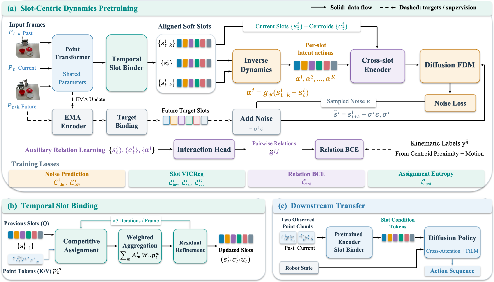
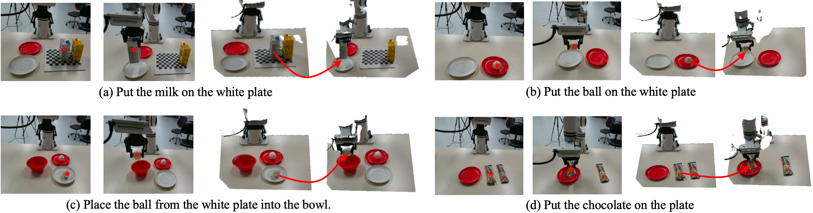
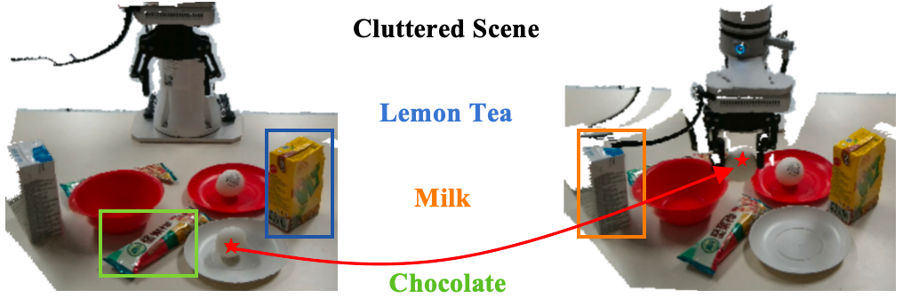
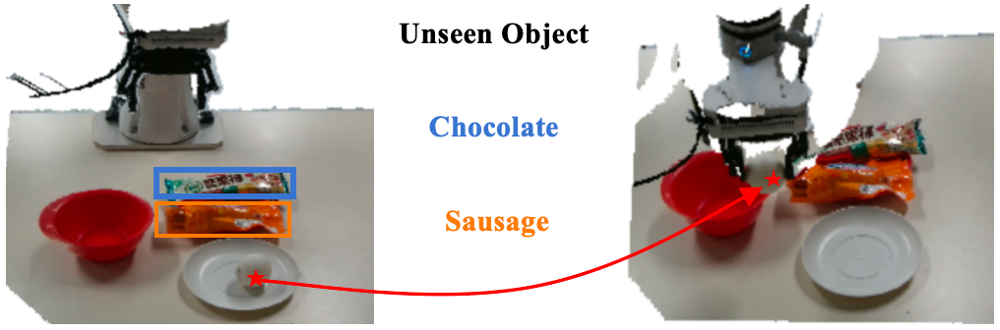

Abstract
Robot manipulation involves localized changes: picking up a cup moves the cup while leaving the surrounding scene largely unchanged. Yet existing 3D visual pretraining methods, including recent dynamics-aware variants, model state transitions at the scene level, compressing the motion of everything in a scene into a single global latent action. This conflates semantically distinct transitions, obscures dependencies between changing regions, and leaves the representation vulnerable to task-irrelevant content.
We introduce DynaSlots, an action-free, label-free pretraining framework that decomposes each point-cloud frame into a small set of temporally consistent slots and models dynamics at this per-slot level rather than the scene level. A temporal slot propagation module promotes consistent slot assignments across frames; an inverse dynamics model extracts one latent action per slot from feature differences; and a diffusion-based forward dynamics model, paired with a self-supervised interaction head, predicts each slot's future state while learning pairwise proximity-and-motion relations.
Experiments on Meta-World, Adroit, and a real RealMan RM65-B robot show that DynaSlots significantly outperforms prior scene-level baselines: it attains higher success rates in simulation and exhibits strong robustness to scene clutter and unseen objects in real-world manipulation.
Key Ideas
The latent action of a transition should be defined per slot, not per scene.
Slot-level dynamics pretraining
The first slot-based dynamics-aware 3D visual pretraining framework — no action labels, no segmentation ground truth, no reconstruction supervision.
Temporal slot propagation
Previous-frame slots query the current frame to keep cross-frame slot correspondence, so feature differences reflect real temporal change instead of assignment shuffling.
Cross-slot dynamics + interactions
A cross-slot diffusion forward dynamics model with a self-supervised interaction head captures how slots move and co-move relative to one another.
Method
Point cloud → tokens → temporally consistent slots → per-slot latent actions → cross-slot diffusion dynamics.

Simulation Results
Meta-World & Adroit, following the evaluation protocol and baseline suite of prior scene-level dynamics-aware work. Higher is better; parentheses give each method's gap to the best.
| Category | Method | Easy | Med. | Hard | V.Hard | MW Mean | Door | Pen | Adroit Mean |
|---|---|---|---|---|---|---|---|---|---|
| Large-scale | CLIP | 29.3 | 14.0 | 5.0 | 55.3 | 24.9 | 61.0 | 84.0 | 72.5 |
| DINOv2 | 34.0 | 14.0 | 5.0 | 55.3 | 25.9 | 76.0 | 84.0 | 80.0 | |
| PointNet | 71.3 | 49.7 | 23.0 | 55.3 | 51.7 | 80.0 | 72.0 | 76.0 | |
| Static 3D | Point-MAE | 77.3 | 61.3 | 42.0 | 70.0 | 63.9 | 64.0 | 76.0 | 70.0 |
| PointDif | 83.3 | 58.0 | 41.0 | 58.7 | 61.1 | 76.0 | 78.0 | 77.0 | |
| Policy-only | DP3 | 82.7 | 65.0 | 49.0 | 80.0 | 69.7 | 70.0 | 80.0 | 75.0 |
| Dyn., 2D | DynaMo | 42.0 | 21.7 | 14.0 | 34.0 | 27.6 | 76.0 | 68.0 | 72.0 |
| Dyn., 3D (scene) | DynaMo-3D | 84.7 | 55.3 | 41.0 | 80.0 | 64.9 | 73.0 | 76.0 | 74.5 |
| FVP | 80.0 | 44.3 | 34.0 | 62.0 | 54.3 | 66.0 | 76.0 | 71.0 | |
| AFRO | 88.0 | 69.7 | 55.0 | 90.7 | 76.0 | 82.0 | 84.0 | 83.0 | |
| Dyn., 3D (slot) | DynaSlots (ours) | 92.3 | 74.7 | 60.0 | 95.3 | 80.8 | 87.0 | 89.0 | 88.0 |
Mean success rate (%). Meta-World groups: Easy(3), Med.(6), Hard(2), V.Hard(3) tasks. DynaSlots leads every group and both benchmarks.
Real-World Experiments
A RealMan RM65-B arm with a parallel-jaw gripper and a fixed eye-to-hand Intel RealSense RGB-D camera. 100 expert trajectories per task; five initial layouts × ten trials each.

| Method | Suite Avg. (%) | |
|---|---|---|
| Target-task data | RH20T pretrain + FT | |
| DP3 | 57.5 | 51.0 |
| PointDif | 55.0 | 48.5 |
| FVP | 57.0 | 51.5 |
| DynaMo-3D | 63.5 | 57.0 |
| AFRO | 70.5 | 63.0 |
| DynaSlots (ours) | 79.0 | 73.0 |
Robustness: clutter & unseen objects
Both on task (c), five layouts × ten trials. “Drop” is the absolute change vs. the matched original scene.

| Method | No clutter | Cluttered | Drop |
|---|---|---|---|
| DP3 | 54.0 | 28.0 | 26.0 |
| PointDif | 52.0 | 26.0 | 26.0 |
| FVP | 54.0 | 30.0 | 24.0 |
| DynaMo-3D | 60.0 | 36.0 | 24.0 |
| AFRO | 68.0 | 40.0 | 28.0 |
| DynaSlots (ours) | 78.0 | 70.0 | 8.0 |
DynaSlots retains 89.7% of its no-clutter score under clutter; the strongest scene-level baseline retains only 58.8%.

| Method | Original | Unseen | Drop |
|---|---|---|---|
| DP3 | 54.0 | 38.0 | 16.0 |
| PointDif | 52.0 | 36.0 | 16.0 |
| FVP | 54.0 | 40.0 | 14.0 |
| DynaMo-3D | 60.0 | 48.0 | 12.0 |
| AFRO | 68.0 | 54.0 | 14.0 |
| DynaSlots (ours) | 78.0 | 72.0 | 6.0 |
With scenes containing unseen objects, DynaSlots loses only 6.0 points and beats the strongest baseline by 18.0.
Quick Start
Linux · Python 3.8 · MuJoCo 2.1 · CUDA. Full setup in INSTALL.md.
# 1. environment conda create -n dynaslots python=3.8 -y conda activate dynaslots pip install -e . # 2. demonstrations bash scripts/gen_demonstration_adroit.sh pen bash scripts/gen_demonstration_metaworld.sh bin-picking # 3. pretrain representation bash scripts/pretrain_dynaslots.sh adroit_pen run1 0 0 # 4. train & evaluate the diffusion policy bash scripts/train_dynaslots_policy.sh adroit_pen run1 0 0 bash scripts/eval_dynaslots_policy.sh adroit_pen run1 0 0
Arguments are task_name, run_name,
seed, and comma-separated GPU IDs.
Set RESUME=true to resume representation pretraining.
Repository Layout
dynaslots/ | Core models, policies, environments, datasets, and configs |
scripts/ | Demonstration, training, and evaluation entry points |
tests/ | Unit tests for slot binding and policy conditioning |
third_party/ | Required simulation dependencies without generated artifacts |
pretrain.py, train.py, eval.py | Top-level entry points |